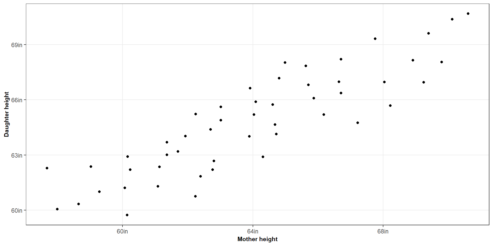
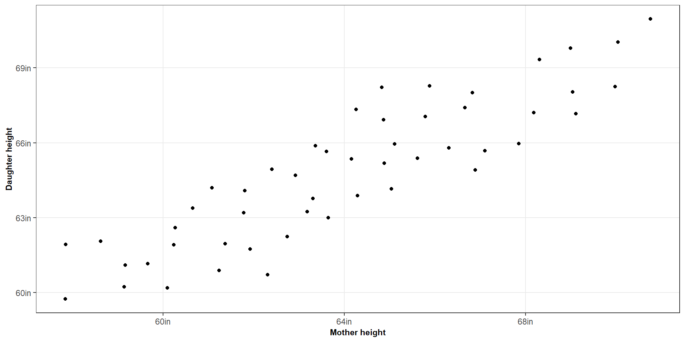
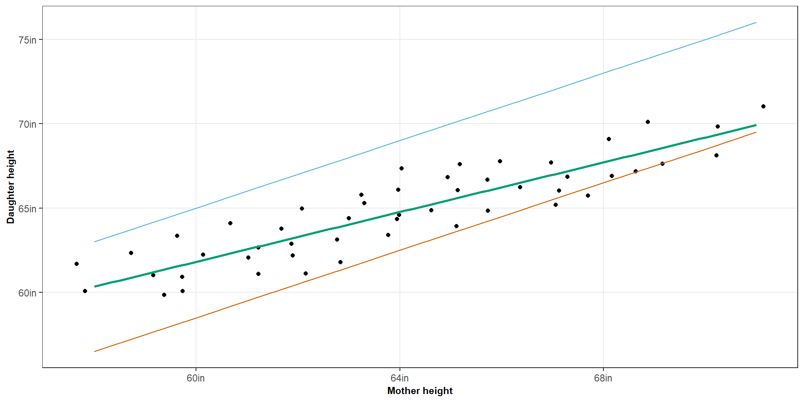
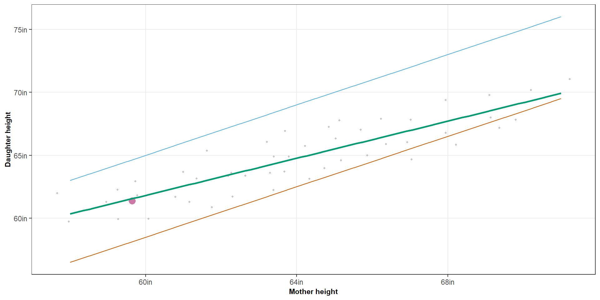
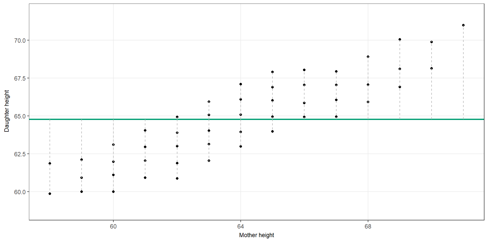
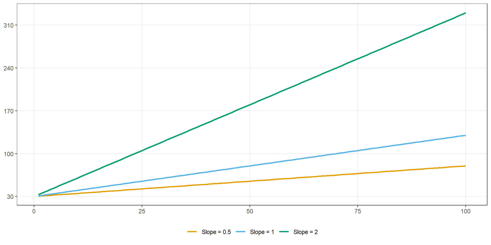
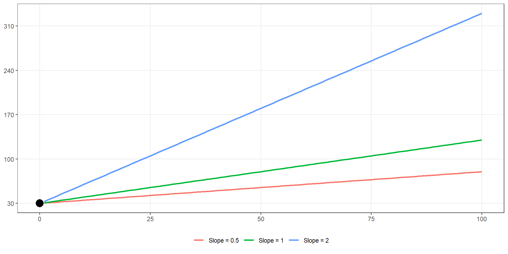

| Mother | Daughter | |
|---|---|---|
| Original data | 60 | 61.00 |
| Blue line | 60 | 65.00 |
| Orange line | 60 | 58.50 |
| Green line | 60 | 60.74 |
ST303 - Linear Models
How can we use data to understand and predict numerical outcomes?
Can we predict the height of someone’s daughter?
Suppose we know the height of someone’s mother.
Can we use that information to predict her height?
What would you expect?
Would you expect a taller mother to have a taller daughter?
Would you expect the relationship to be perfect?
How accurate do you think our predictions could be?
Can we predict the height of someone’s daughter?
Suppose we know the height of someone’s mother.
Can we use that information to predict her height?
Let’s do a quick exercise
Let’s say the height of a mother is 64.37 inches.
What would you predict the height of the daughter to be

Figure 1: Height of mother versus height of daughter

We have two variables
\[ X = \text{Mother's height} \\[8pt] Y = \text{Daughter's height} \]
Could we summarise this data using a single line?

Figure 2: Height of mother versus height of daughter (with prediction lines)

| Mother | Daughter | |
|---|---|---|
| Original data | 60 | 61.00 |
| Blue line | 60 | 65.00 |
| Orange line | 60 | 58.50 |
| Green line | 60 | 60.74 |
Blue over predicted by 4 inches
Orange under predicted by 2.5 inches
Green under predicted by 0.26 inches
We call these differences “residuals”
\[ \epsilon_i = y_i - \hat{y}_i \]
Every possible line gives us a different set of residuals.
Residuals hold the key to determining which line is the best.
We want a line that minimises the sum of squared residuals.
\[ \text{minimise} \sum^n_{i = 1}(y_i - \hat{y}_i)^2 \]
This is the idea behind ordinary least squares.

Figure 3: Interactive demonstration of how different slopes affect the candidate line and residuals. Watch how the dashed lines (residuals) change as the line changes.
\[ \hat{y_i} = \beta_0 + \beta_1x_i + \epsilon_i \]
You might recognise
This is basically the same as the \(y = mx + c\) equation you may have learned growing up
Let’s say we have the following regression equation
\[ \hat{y} = 30 + \textbf{0.5}x \]
What does 0.5 mean?
For every 1-unit increase in X, predicted values of Y increases by 0.5 units.
A higher slope value means that the predicted value of Y increases faster

Let’s say we have the following regression equation
\[ \hat{y} = \textbf{30} + 0.5x \]
But what about the value of 30
This is the predicted of Y when X is equal to 0
Helpful way to understand
A helpful way that I learned to understand this was to think about when you start a job.
Everyone will have 0 years of experience when the first start and will earn the same salary (this is the intercept)
As their years of experience progress their salary will increase by a set amount (this is the slope)

(Intercept) mother
17.6046633 0.7368844 Model results
But where do these values come from?